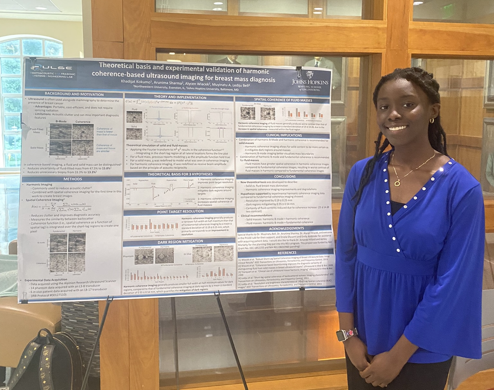
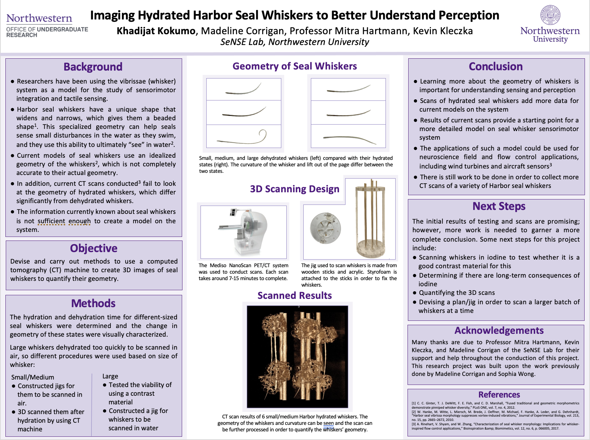

Hi, I am Khadijat Kokumo
Welcome to my portfolio!
About MeMy Projects
Theoretical basis and experimental validation of harmonic coherence-based ultrasound imaging for breast mass diagnosis
Johns Hopkins University
Jun 2022 - Aug 2022
This past summer, I researched in the PULSE Lab at Johns Hopkins University to discuss imaging modes that can be used to improve the diagnosis of breast masses. I presented my work at the end of the program and this work will be presented again in late February at the SPIE Medical Imaging Conference in San Diego.
Imaging Hydrated Harbor Seal Whiskers to Better Understand Perception
Northwestern University
Dec 2021 - Jun 2022
In this project, I focused on devising and carrying out methods to use a computed tomography (CT) machine to create 3D images of seal whiskers to quantify their geometry. I conducted experiments to determine the time to hydrate and dehydrate whiskers based on size, while also visually characterizing the changes in geometry.